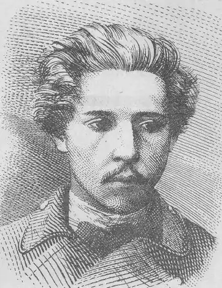

Народився 25 травня 1887 р. в с. Оленівка Чернігівської області. Проживав із батьками у Варшаві, де закінчив гімназію. У 1906—1907 рр. навчався в Ніжинському історико-філологічному інституті.
Перші літературні спроби припадають на 1902 р. Спочатку працював над перекладом "Слова о полку Ігоревім" українською мовою, а потім над поезією улюбленого поета Г. Гейне. У цей час почав писати і власні вірші. Найпліднішими були 1905—1906 рр., коли він написав повість "Великий в малім та малий у великім", драму "Смерть поета".
О. Плющ захоплюється громадською роботою. Через матеріальну скруту займається репетиторством, читає платні лекції. Багато уваги приділяє роботі в ніжинській "Просвіті". Зберігся один із рефератів О. Плюща "На роковини Т. Г. Шевченка", який він прочитав на засіданні "Просвіти". Художні твори О. Плюща до нас не дійшли. 1911 р. в "Одеському літературному союзі" було опубліковано ранні твори письменника. Як зазначає у своїх розвідках про О. Плюща І. Миронець, у 1905—1907 рр. були написані, але не опубліковані романи "Вперед" та "В катовні", великі п’єси "Перед світом", "Годі", щоденник, близько 15 незавершених творів, серед яких повість "Два приятелі, або Чи Христос, чи революція?", роман "Метаморфози". Помер 26 травня 1907 р.